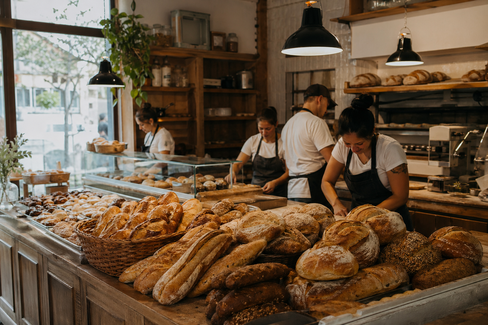
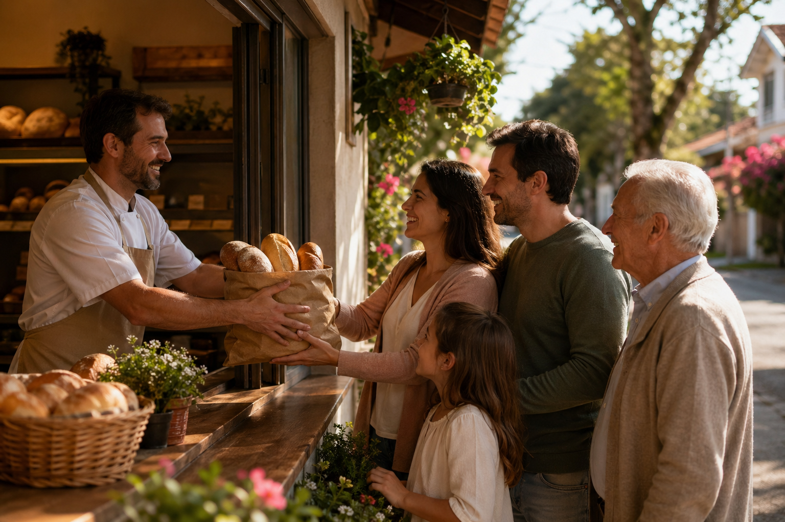

Pães frescos todo dia
Fornada para acompanhar a rotina da casa: café cedo, lanche da tarde e pão quentinho quando a fome chega.
Padaria artesanal no Jardim Primavera
A Padaria da Dona Maria prepara pães frescos todo dia, bolos caseiros, salgados e café da manhã para famílias e moradores do Jardim Primavera.
Contato a confirmar. Use a seção de contato para combinar seu pedido.

Produtos principais
Uma seleção simples, de rotina: itens para o café da manhã, para a mesa de casa e para quem passa pelo bairro precisando de algo gostoso.
Fornada para acompanhar a rotina da casa: café cedo, lanche da tarde e pão quentinho quando a fome chega.
Bolos com cara de cozinha de família, feitos para dividir na mesa ou levar para alguém especial.
Opções práticas para o lanche, para receber visitas ou para resolver uma pausa rápida no dia.
Um ponto acolhedor no Jardim Primavera para começar o dia com pão, café e atendimento próximo.

Rotina simples
A proposta é direta: produção diária, balcão de bairro e pedidos combinados com antecedência quando precisar reservar ou encomendar.
Os produtos principais ficam disponíveis conforme a produção do dia.
Para bolos, salgados ou quantidades maiores, o ideal é falar antes e confirmar disponibilidade.
A padaria atende famílias e moradores do bairro, com clima familiar e artesanal.
Encomendas
Converse com a Padaria da Dona Maria para combinar bolos caseiros, salgados ou pães em maior quantidade. Como o contato não foi informado, o pedido pode ser alinhado pela seção de contato.
Cuidado artesanal
Sem complicar: pão para o café, bolo para a família, salgado para o lanche e uma parada gostosa no caminho pelo Jardim Primavera.
Contato
A Padaria da Dona Maria atende moradores do Jardim Primavera. O número de WhatsApp não foi informado nesta página, então confirme o contato diretamente com a padaria.
Região: Jardim Primavera
Produtos: pães frescos todo dia, bolos caseiros, salgados e café da manhã.